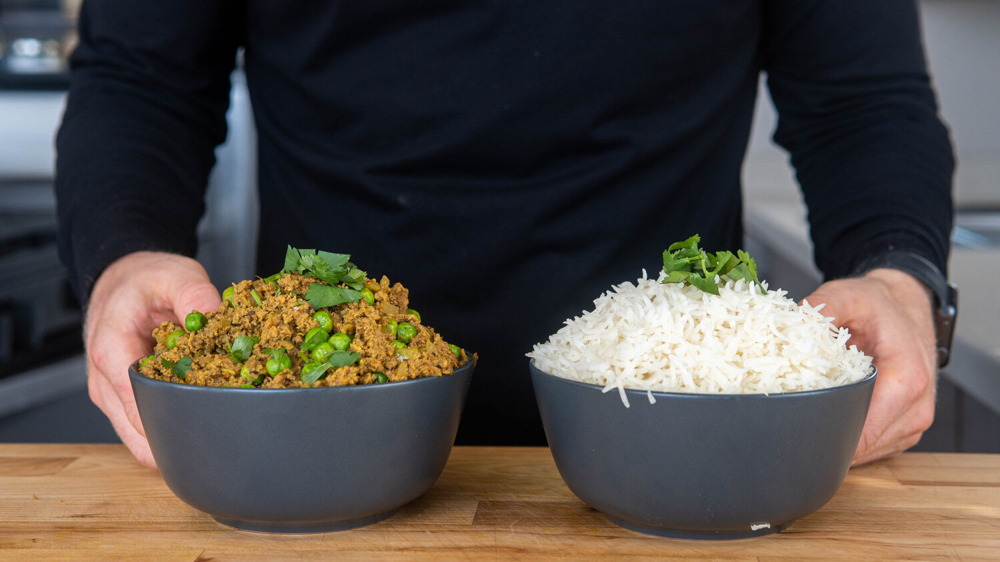

Keema Matar

Description
Keema is described by Madhur Jaffrey as the first Indian dish that all Indian students abroad learn how to make and I can see why. First off, It's just flat delicious and probably reminds them of home. Second, it's quite easy.
Ingredients
Spices
- Spoonful (1 tsp) Mustard seeds (or ground)
- Spoonful (1 tsp) Cumin seeds (or ground)
- 10 black peppercorns (or ground)
- 2 cloves
- 1 bay leaf
- Spoonful (1 tsp) Ground hot chili powder (or cayenne)
- Spoonful (1 tsp) Ground turmeric
- Sprinkle Ground garam masala
- 15 ml (1 TBSP) neutral oil
Aromatics
- 1/2 onion, minced
- 2 cloves garlic, grated
- 1 inch piece of ginger, grated
- 3 green chiles (or a serrano / jalapeno), minced
- Sprinkle of salt
Sauce Base
- 2 roma tomatoes (or canned tomatoes), grated
- 1 lb ground beef (or lamb)
- Water
- Spritz of lemon juice
- 200 g Frozen Peas
- Sprinkle of salt
Garnish with Cilantro
Steps
- Crush the mustard seed, cumin seed, and pepper corns in a mortar and pestle. Prep the aromatics as mentioned. Grate or finely dice the tomatoes. Add the ground beef to a bowl and mix in about a cup of water. Mix the beef until it is smooth and all the clumps are broken up, see the video for the texture I am looking for.
- Set a pan over medium heat, add a drizzle of oil, enough to cover the pan. Once hot, add the cinnamon stick, cloves, peppercorns, mustard seed, cumin seed and bay leaf. Toast for 10-20 seconds until fragrant, being careful not to burn. Add the aromatics and cook down for 5 to 8 minutes, stirring occasionally.
- Stir in the ground spices (cumin, turmeric, and garam masala) along with a sprinkle of salt and cook for another 30 seconds. Add the tomatoes and cook for 5 minutes.
- Turn the heat to high, add the ground meat with another little sprinkle of salt, and break apart while frying for about 8 to 10 minutes until cooked through.
- Turn the heat to low, toss in the peas and stir in until cooked through.
- Turn the heat off. Add the lemon juice, and a sprinkle of garam masala. Taste it, add more salt as needed.
- Serve with rice, roti, or however you want to do it. Garnish with fresh cilantro
Return to top
Return to main page